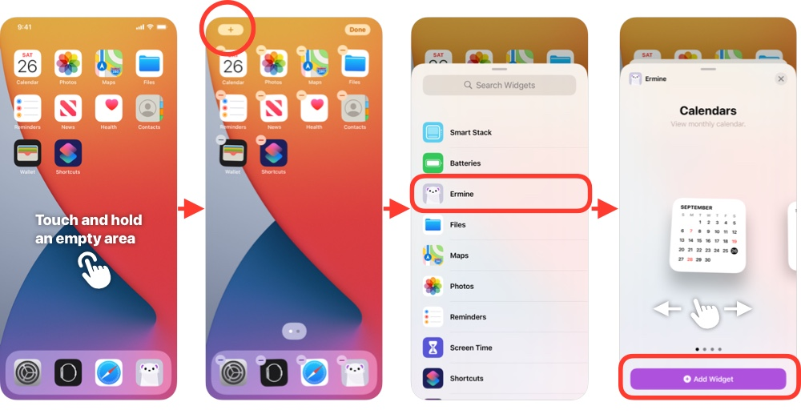

Help目次へ戻る
iPhone、iPadのホーム画面にErmineのウィジェットを表示できます。
ホーム画面で、何もない部分を長押しし、左上に出る追加ボタン（＋）をタップします。 ウィジェットギャラリーから、Ermineを選択、使いたいウィジェットを選んで、「ウィジェットを追加」ボタンをタップで追加できます。
ウィジェットギャラリーに、Ermineが見つからない場合は、先にErmineアプリ本体を一度たちあげてから、もう一度ホーム画面でお試しください。
